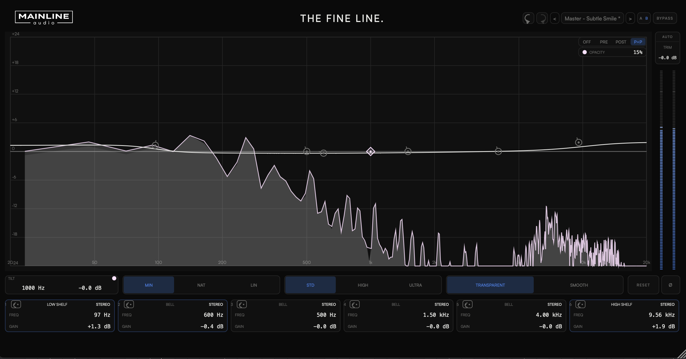

Mainline Audio
Precision Mastering Equalizer
A precise, restrained mastering EQ — exact numeric control, minimal visual noise.
Available Now · Introductory Price
$99
Regular price $149

Six bands with proportional Q that widens as gain increases, so every move stays a broad, confident mastering gesture rather than a surgical mixing cut.
Minimum, Natural, and Linear phase — genuinely different processing engines, not one algorithm with a mode switch bolted on. Choose the one the material calls for.
A global tilt macro for fast broad tonal moves, plus Contour's Transparent and Smooth voicing — reach for the whole curve without touching a single band.
Target each band independently to Stereo, Mid, Side, Left, or Right. Combine routing modes freely across all six bands for precise control of tone, center, width, and individual channels.
Each phase engine processes the same six-band curve through a genuinely different signal path. Switch engines to match the mastering situation, not just the sound.
Every comparison tool is built to answer one question honestly: what is this specific move actually doing.
A light, honest read of what's happening — not a second metering suite bolted onto an EQ.
| Parameter | Range |
|---|---|
| Band Frequency | 20 Hz – 20 kHz |
| Band Gain | ±18 dB |
| Band Q | 0.1 – 10 |
| HP / LP Slope | 6 / 12 / 18 / 24 / 36 / 48 / 96 dB/oct |
| Tilt Frequency | 20 Hz – 20 kHz |
| Tilt Gain | ±6 dB |
| Output Trim | ±24 dB |
| Phase | Minimum / Natural / Linear |
| Quality | Standard / High / Ultra |
| Contour | Transparent / Smooth |
| Band Routing | Stereo / Mid / Side / Left / Right — independently selectable per band |
| Formats | AU / VST3 |
| Platform | macOS · Apple Silicon & Intel (Universal) |
VST3 & AU · macOS · Apple Silicon & Intel
Join the List
A precise, restrained mastering equalizer built for exact numeric control with minimal visual noise — six bands, three phase engines, Tilt, and Contour, with independent Stereo, Mid, Side, Left, or Right routing available on every band.
Yes — The Fine Line is available now.
VST3 and AU on macOS (Apple Silicon & Intel, Universal). AAX / Windows are not currently supported.
Up to 2 computers that you own or control. Deactivate a machine at any time to free up an activation.
Educational and institutional licensing may be available for schools, labs, and training facilities. Contact Mainline Audio for details.
Yes. A fully functional 14-day demo — the same AU/VST3 installer as the paid version — is available with no audio interruptions, muting, or feature restrictions. Get it through the free demo checkout above; you'll receive download access by email. Once installed, choose Start 14-Day Demo when you open The Fine Line. No payment or license key required.
Mainline Audio may provide updates for The Fine Line at its discretion. There is no automatic in-app update check today.